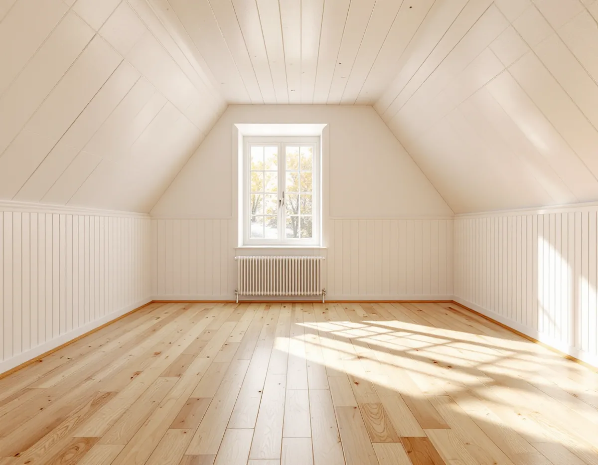
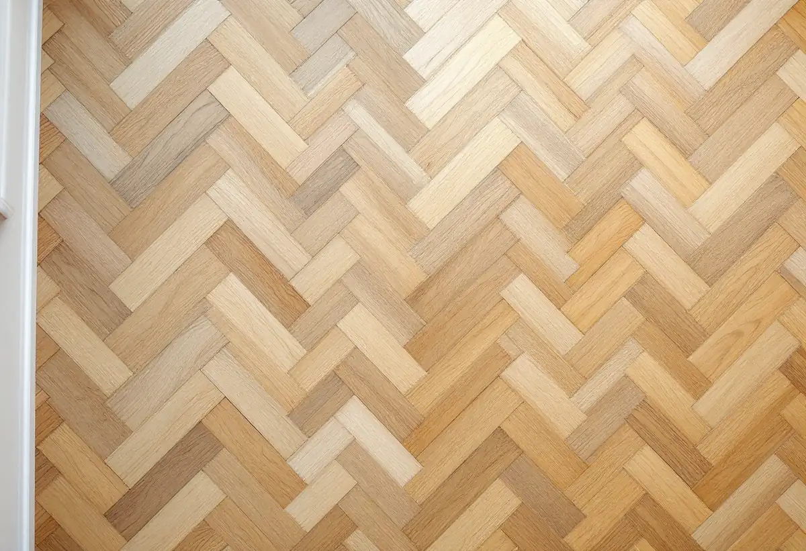

Platsbesök
Vi kontrollerar slitskikt, spikar och svikt och frågar om tidigare slipningar.
Ett trägolv som har legat i en villa i femtio år kan få en ny yta, men bara om det finns tillräckligt med trä kvar och undergolvet ligger stilla. Geal Entreprenad AB slipar, lagar och lägger golv i Hässelby villastad, Hässelby gård och Hässelby strand. Du får ett gratis platsbesök och ett skriftligt kostnadsförslag, och ROT-avdraget dras direkt på fakturan.

Enligt Stockholms stads områdesfakta för 2025 finns 7 029 bostäder i Hässelby villastad, och 5 009 av dem ligger i småhus. Nästan alla, 4 757, är äganderätter. I grannområdet Hässelby gård finns ytterligare 339 bostäder i småhus. Stadsmuseets Stockholms Spår berättar att radhusen vid Astrakangatan och Friherre Lövstavägen uppfördes av Småstugebyrån 1957 och att de ansågs mycket moderna när de var nya.
Ett hus som har haft flera ägare kan ha fått golvet slipat mer än en gång, och ibland har nya golv lagts ovanpå gamla. Därför börjar vi med att ta reda på vad golvet är gjort av och hur mycket trä som finns kvar, innan vi föreslår slipning eller ett nytt golv.

Golvbranschens riktlinjer för slipning, SLIP 22, börjar med en kontroll av golvet. Det finns golv som liknar ett slipbart trägolv men inte går att slipa, till exempel laminat, golv med ett slitskikt tunnare än en millimeter och fabrikslackerade golv som är EB-härdade. Är man osäker på slitskiktet rekommenderar riktlinjerna att man kontrollerar med en kniv i en springa i ett hörn av rummet. Golvbranschen räknar med att ungefär en millimeter försvinner vid varje slipning.
Har slitskiktet lossnat på något ställe ska det limmas fast före slipningen. Spikar ska tas bort, eftersom de förstör slippappret och kan ge gnistor som i värsta fall antänder dammet i slipmaskinens påse. Visar det sig att golvet inte tål en slipning till, är ett nytt golv ovanpå eller i stället för det gamla nästa alternativ. Det tar vi upp med dig innan något arbete börjar.
Undergolvet ska enligt SLIP 22 vara stabilt och utan svikt. Sviktar golvkonstruktionen kan ytan bli vågig efter slipningen, det som branschen kallar ondulering, och då blir resultatet inte godtagbart. Går svikten inte att åtgärda före slipningen ska kunden få veta det innan arbetet börjar. Vågor kan också komma från en felinställd slipmaskin, och det är golvsliparens ansvar att maskinen är rätt inställd och servad.
I ett äldre hus kan svikten sitta i en enskild bjälke eller i en bräda som har släppt från sitt underlag. Vi går över golvet och lyssnar och känner efter innan vi lämnar ett kostnadsförslag. Behöver bjälklaget förstärkas eller brädor bytas tar vi med det som en egen post. Mer om snickeriarbeten i huset finns på sidan om snickare i Hässelby.
SLIP 22 delar slipningen i tre steg. Grovslipningen tar bort all tidigare ytbehandling och jämnar till golvet, normalt med korn 36–50. Mellanslipningen görs i två steg med finare korn, normalt 60–80, för att få bort reporna från grovslipningen. Finslipningen jämnar ut skillnaden mellan kantslipen och den stora maskinen, och slutresultatet ska motsvara korn 100 på barrträ och korn 120 på lövträ.
Slipriktningen följer träet. Ett golv med brädor finslipas i träets längdriktning, medan rutmönster, fiskben och andra mönster normalt slipas diagonalt först och sedan i rummets längdriktning eller från det håll ljuset kommer. Golvet bör inte ytbehandlas när luftfuktigheten inomhus ligger utanför 30–60 procent eller när träets fuktkvot ligger utanför 6–10 procent. Riktlinjerna påpekar att det är variationerna i fukt, inte nivån i sig, som ger sprickor i spacklade fogar.
Golvbranschen skriver att slipdamm från bland annat ek och bok är cancerframkallande. Slipningen bör göras med en partikelseparator eller cyklondammsugare med HEPA-filter, och den som slipar ska ha andningsskydd av klass P3, hörselskydd och maskinen kopplad via jordfelsbrytare. Därför stänger vi dörrar och täcker öppningar mot rum som inte slipas.
Damm som har blandats med rester av lack eller olja kan självantända. Dammpåsen ska tömmas efter slipningen och innehållet förvaras utomhus eller på en brandsäker plats. Golvbranschens riktlinjer för oljebehandling tillägger att trasor som har varit i kontakt med olja ska ligga i vatten i minst ett dygn eller brännas direkt. Ska väggarna målas efter golvet finns mer under målare i Hässelby.
Vi kontrollerar slitskikt, spikar och svikt och frågar om tidigare slipningar.
Slipning, lagning och ytbehandling redovisas var för sig.
Möbler flyttas, lösa stavar limmas och angränsande rum skyddas mot damm.
Golvet grov-, mellan- och finslipas med dammavskiljning.
Lack, olja eller annan behandling läggs på vid rätt fukt och temperatur.
Dammpåsar tas ut, lister sätts tillbaka och du får skötselråd.
Att slipa och byta golv i ett småhus du äger är rotarbete enligt Skatteverket. Avdraget är 30 procent av arbetskostnaden och högst 50 000 kr per person och år. Rot och rut får tillsammans vara högst 75 000 kr.
Material, som lack och olja, och resekostnader ger inget avdrag. Geal gör avdraget direkt på fakturan.
Golvytan, hur många rum som slipas och hur mycket som behöver lagas före slipningen betyder mest. Mönstergolv och trappor tar längre tid än raka brädor. Platsbesöket är gratis och du får ett skriftligt kostnadsförslag.
Parkett, trägolv, klinker och slipning.
Golvläggning i Stockholm →Takbyte, takbesiktning och plåtarbeten.
Takläggare i Hässelby →Villastaden, Hässelby strand och gård.
Takrenovering i Hässelby →Källarbadrum, backventil och bostadsrätt.
Badrumsrenovering i Hässelby →Riva, bygga nytt och delad tomt.
Byggföretag i Hässelby →Villastad, sommarstugor och grupphus.
Fasadrenovering i Hässelby →Villastad, grupphus och radhus i Hässelby.
Målare i Hässelby →Plåttak efter eternit, rännor och beslag i Hässelby.
Plåtslagare i Hässelby →Altan, bod och plank i villastaden och radhusen.
Snickare i Hässelby →